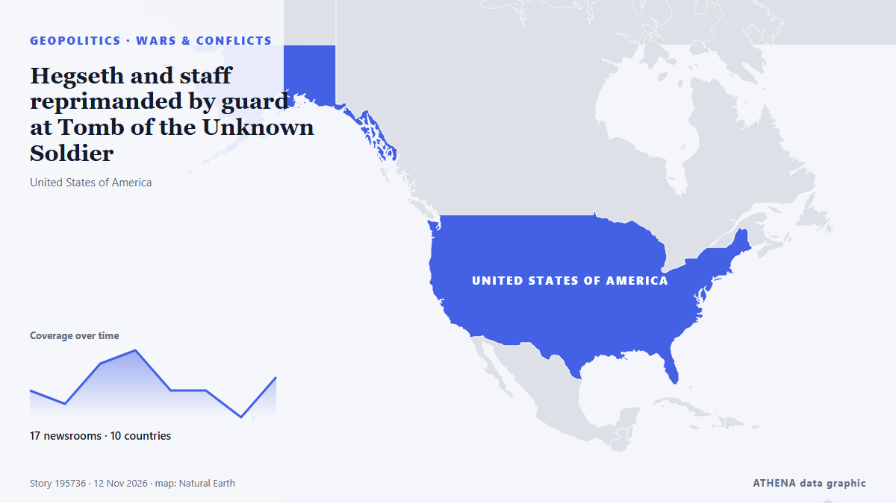

Géopolitique, politique et sécurité
SponsoriséPrésenté par  Cybernetics and Artificial Intelligence Lab Welcome to the Cybernetics and Artificial Intelligence Laboratory, established at the Department of Business Administration of the National and Kapodistrian University of Athens. The lab is headed by Professor Dimitrios Thomakos. The lab aims to do research that can be published in top venues. Our research uses tools and methods of Artificial Intelligence, and lies in the following areas: - Forecasting - Decision making - Cyber security - Finance We are always looking forward to collaborating with exceptional students!
Cybernetics and Artificial Intelligence Lab Welcome to the Cybernetics and Artificial Intelligence Laboratory, established at the Department of Business Administration of the National and Kapodistrian University of Athens. The lab is headed by Professor Dimitrios Thomakos. The lab aims to do research that can be published in top venues. Our research uses tools and methods of Artificial Intelligence, and lies in the following areas: - Forecasting - Decision making - Cyber security - Finance We are always looking forward to collaborating with exceptional students!
Les titres sont affichés en anglais, tels que publiés.

Guerres et conflitsHegseth and staff reprimanded by guard at Tomb of the Unknown Soldier
The group was publicly called out by an on-duty guard patrolling the tomb. de The Independent
| 30 oct. | 287 |
|---|---|
| 31 oct. | 153 |
| 1 nov. | 212 |
| 2 nov. | 316 |
| 3 nov. | 352 |
| 4 nov. | 396 |
| 5 nov. | 328 |
| 6 nov. | 227 |
| 7 nov. | 211 |
| 8 nov. | 199 |
| 9 nov. | 311 |
| 10 nov. | 275 |
| 11 nov. | 199 |
| 12 nov. | 45 |
Democrat Colom wins Mississippi Senate seat, becomes state's first Black senator since 1874
He became the first Democrat to win a Mississippi Senate seat since John Stennis in 1982. de The Straits Times
Israel’s Eisenkot urges Netanyahu to exercise ‘prudence’ on security issues
Former deputy governor tells Central Banking prime minister’s proposals are ‘stupid’ and ‘crazy’ de Central Banking
Ukraine and Russia Agree on Major Prisoner Swap in Abu Dhabi
Russia and Ukraine agreed on Wednesday to a large-scale prisoner exchange after two days of crucial talks in Abu Dhabi that also yielded progress on practical issues, including mechanisms to monitor… de The National
US President Trump’s grip on Republican Party weakens after midterm defeat: Poll
Christians United for Israel called the vice president’s comments a ‘dog whistle’ faulting Jews. de The Jerusalem Post
Iran security chief threatens to strike US bases in Europe if used for attacks
Iran’s security chief Mohsen Rezaei has warned that Iran may strike US military bases in Europe if they are used to launch attacks on the Islamic Republic. de Arab News
Iran designates Argentina's navy and air force as 'terrorist organisations'
Tehran has designated Argentina’s navy and air force as “terrorist organizations,” Iran’s Foreign Ministry said on Wednesday, in a reciprocal move following Buenos Aires’ designation of the Islamic… de Cyprus Mail
Russia-US-Ukraine trilateral talks resume for second day in Abu Dhabi
Rustem Umierov said Ukraine's team is en route to Abu Dhabi for trilateral talks on 10-11 November, with European and NATO representatives also attending. de Ukrainska Pravda (English)
US House blocks bid to impeach Defense Secretary Hegseth
Republicans in the US House of Representatives blocked an effort on Tuesday to impeach Defense Secretary… de BusinessWorld
Drone attack triggers fire in Russia’s Baltic port of Ust-Luga, Ukraine says it launched attack
Ust-Luga is a major oil, oil products and grain export outlet, along with other commodities. de The Straits Times
Kennedy Family Sues To Block Trump’s 250-Foot Arch—Says It Would Cast Shadow On JFK’s Grave
Nine members of the Kennedy family are seeking to join a lawsuit to block the construction of President Donald Trump’s planned triumphal arch in Washington, D.C. de Forbes Business
Saudi coalition says intercepted 3 Houthi missiles fired at Riyadh
Saudi-led coalition claims Houthi missile destroyed over Eastern Province The Saudi-led coalition air defences intercepted and destroyed a ballistic missile launched by the Houthis toward the… de Middle East Eye
US soldier arrested for Russia spying: What we know
A US Army member has been arrested by UK police under the National Security Act for allegedly assisting Russia. de Arab News
US charges 3 men over alleged Iranian-backed plot at UK Fairford air base
The men, including one who is already in jail, face charges over alleged plot at UK air base used in US war on Iran. de Al Jazeera English
Suspected drone attack halts production at Khor Mor in Kurdistan Region of Iraq
Production at the Khor Mor gas facility in Iraq’s Kurdistan Region remains suspended after a suspected drone attack on Nov. de World Oil
LOCAL ELECTIONS 2026: LIVE | First results show ANC support declined in traditional strongholds
Special voting gets underway on Monday and will continue on Tuesday. de SABC News
US Offers Up to $20 Million Reward for Information on Iran’s Nuclear Program
WASHINGTON, Nov 7: The United States has announced a reward of up to $20 million, along with possible relocation, for information about Iran’s nuclear program, including its facili... de Arab Times
Michigan election: How Abdul El-Sayed's critics smeared his defence of Palestinians as 'hate'
With New Hampshire and Georgia staying in Democratic hands, Republicans now look to Michigan for a pickup, where Democrat Abdul El-Sayed is competing with Republican Mike Rogers. de France 24 English
Rubio hails 'very productive' Russia-Ukraine talks in Abu Dhabi
Rubio says Russia-Ukraine Abu Dhabi talks 'very productive' de Khaleej Times (working feed)
Colombian Firms Back Brazil Before Lula Win
Our experts unpack what Lula’s victory means for Brazil’s ties with Washington and how it could reshape a region trending right. de Atlantic Council
Hasina seeks new passport in clearest sign of Bangladesh return
The request marks the clearest step by Hasina to act on her plan to return to Bangladesh in December. de Express Tribune
Iraq bars plane carrying Iran’s football team from landing in Basra over US sanctions
Iraq barred a plane carrying Iran’s national soccer team from landing at Basra airport on Tuesday, a decision by the Iraqi Civil Aviation Authority linked to US sanctions imposed on Iranian airlines… de Cyprus Mail
Rubio sees 'no need' to resume major strikes against Iran at G7
European members of the G7 had pressed Rubio at the meeting of foreign ministers of the group in Paris to avoid any new escalation against Iran. de The New Arab
Russia and Ukraine hold nearly 4 hours of U.S.-mediated talks in Abu Dhabi
The official said it was possible the envoys would travel to Russia at some point after the talks in order to meet with Putin. de TASS (English)
Merz nominates Ilse Aigner as Germany's president
German Chancellor Friedrich Merz formally nominated Bavarian State Parliament's President Ilse Aigner as the country's next president, paving the way for her to become Germany's first female… de AzerNews
Democratic leader Hakeem Jeffries announces bid for US House speaker
'I write to humbly request your support in connection with my candidacy to serve as the next Speaker of the House of Representatives,' says Jeffries in letter. de Anadolu Agency (English)
Canada reimposes sanctions on 11 Iranian entities for contributing to nuclear activities
Nov 10 - Canada reimposed sanctions on 11 Iranian entities on Tuesday for their contribution to Iran's nuclear activities and ballistic missile program, Foreign Minister Anita Anand said. de The Straits Times
Hardline Trump aide Stephen Miller takes over as White House chief of staff
The architect of the Trump administration’s brutal crackdowns on immigration and dissent was already known as “the prime minister.” Now he’ll work as the chief of staff. de Wired
Mecca defense pact could anchor Lebanon’s security, experts say
Opposition Republican People’s Party (CHP) leader Kemal Kılıçdaroğlu has stated his party will vote in favor of a defense agreement between Türkiye, Pakistan and Saudi Arabia when it comes before… de Hürriyet Daily News
Russia and Ukraine hold first peace talks for nine months, gaps have narrowed
ABU DHABI: Russian and Ukrainian officials met in Abu Dhabi on Tuesday for their first US-brokered talks since February, after President Donald Trump suggested last week that a broad deal was… de New Straits Times
Trump says FBI investigating Nvidia boss's affair with alleged Chinese spy
US President Donald Trump has said the FBI is investigating the affair between the chief executive of Nvidia and an alleged Chinese spy. de MyJoyOnline
UFC chief Dana White declines Trump’s ‘jovial’ White House job offer
President Trump said he offered the job of White House press secretary to Dana White, president and CEO of the Ultimate Fighting Championship (UFC). de The Hill